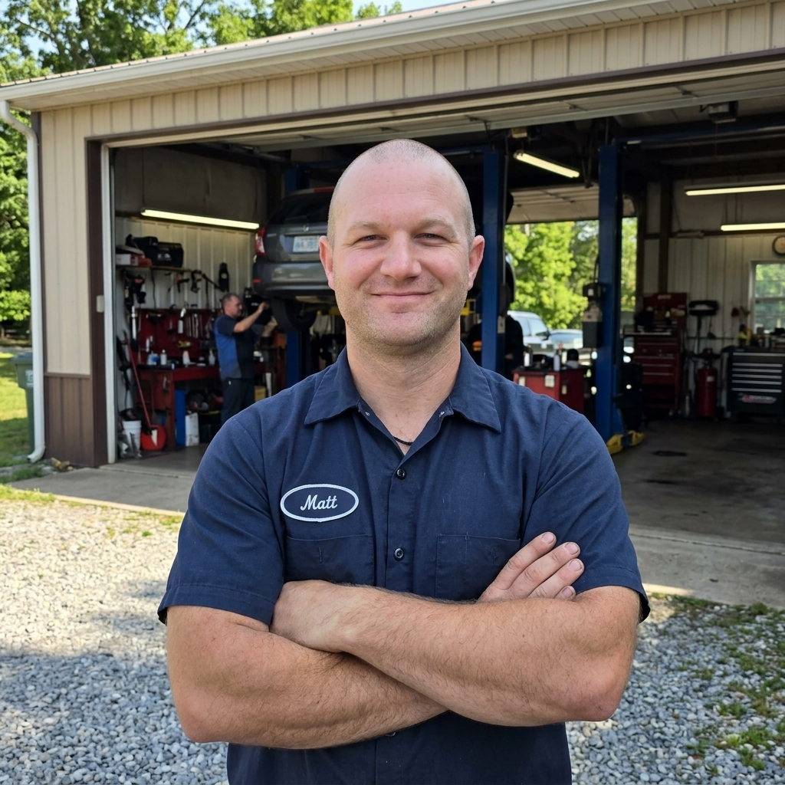

Four simple steps to running like new.
Call or Text
Tell me what's going on with your equipment. No pressure, no obligation.
Free Diagnosis
Drop it off or I'll pick it up. You get an honest, written quote before any work begins.
Expert Repair
I fix it right the first time with quality parts. Most jobs are done within the same week.
Ready to Work
Tested, cleaned, and ready for the season. Pick it up or have it delivered directly to your home.
Honest pricing. No surprises.
Labor Rate
$50/hr
Quality repair with OEM or premium aftermarket parts. Parts are billed separately at cost. You approve everything before I start.
Diagnosis & Estimates
Free
No obligation. Every job and machine is unique, which is why I don't set rigid flat rates. I'll diagnose the problem and give you a custom quote. If it's not worth fixing, I'll tell you honestly.
Pickup & Delivery
$2/mile
Round trip rate. I load and unload. Perfect for riding mowers, heavy generators, and snow blowers you can't haul.

Meet your mechanic.
I run Matt's Power Equipment Repair locally out of Coon Rapids, Minnesota. This isn't a big corporate dealership shop — it's just me, my tools, and a commitment to doing honest, meticulous work at a fair price.
I've been tearing apart and rebuilding small engines for years. Whether it's a Briggs & Stratton that won't fire, a Toro that's lost compression, or a Gravely zero-turn with hydro issues — I've seen it, diagnosed it, and fixed it.
When you call, you talk directly to the person fixing your equipment. No runaround, no upselling, no mystery shop fees. Just good work from a neighbor you can trust.
What neighbors are saying.
"My riding mower wouldn't start after sitting all winter. Matt had it running in two days and the price was way less than I expected. Honest guy, great work."
Dave R. — Coon Rapids"I called three shops before finding Matt. He was the only one who could get to my snow blower before the next storm. Fixed it same day. Lifesaver!"
Sarah K. — Blaine"Matt picked up my Gravely zero-turn, diagnosed a bad carburetor, gave me a fair quote, and had it back to me in 4 days. Will absolutely use him again."
Tom H. — AndoverServing the Northern Twin Cities.
Based in Coon Rapids with convenient pickup & delivery throughout the North Metro.
Don't see your city listed? Call or text anyway — we may still be able to help.
Common questions.
How long does a typical repair take?
Most standard repairs and diagnostics are completed in 3–5 business days. Minor services like tune-ups, oil changes, and blade sharpening are often finished same-day or next-day depending on the current schedule.
Do I need an appointment?
Please call or text first so I know you're coming and can ensure I'm at the shop, but my schedule is flexible. We'll find a drop-off time that works for you.
What brands do you work on?
I service almost all major small engine brands, including: Gravely, Toro, Briggs & Stratton, Kohler, Honda, Husqvarna, Craftsman, John Deere, Ariens, Stihl, Echo, MTD, and more. If you don't see yours here, just ask!
How does pickup & delivery work?
I will come to your home with a truck and trailer, safely load your equipment, repair it at my shop, and deliver it back to you. The fee is simply $2.00 per mile round trip.
Do you offer a warranty on your work?
Yes, I provide a 30-day labor warranty. If the exact same issue returns within 30 days of the repair, I will fix it at no additional labor cost to you.
Will you tell me if it's not worth fixing?
Absolutely. Honesty is the foundation of my business. Many entry-level mowers today have plastic parts and aren't built to last. If the cost of a repair approaches the cost of a new disposable unit, I will tell you upfront so you don't waste your money.
What payment methods do you accept?
I accept Cash, Check, Venmo, and Zelle. Payment is only due when the work is fully completed and you are completely satisfied with the result.
Let's get it fixed.
Call, text, or email for a free estimate or to schedule service. I pride myself on fast response times.
📍 Coon Rapids, MN 55433 — By Appointment
🕒 Mon–Fri: 8am – 6pm
Sat: 9am – 3pm
* Placeholder info — pending update with Matt's direct contact details